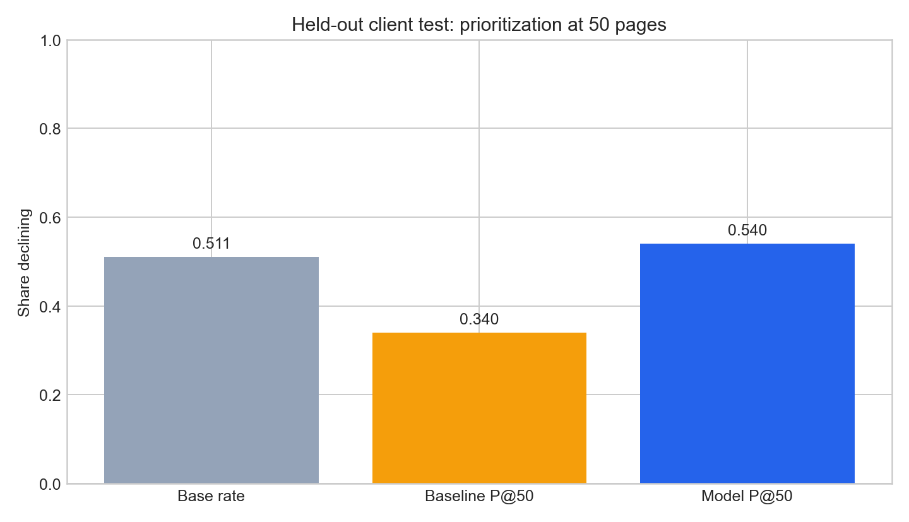

Case study / content prioritisation
Rank review candidates with public-safe signals.
This leakage-aware prototype investigates whether content signals can help prioritise which items should be reviewed first. It is a case study, not a production system.
Reported result
Reported Precision@50 for the model across seven held-out clients.
Reported Precision@50 for the baseline on the same evaluation framing.

Real capture from the public capstone analysis. It is used as evidence rather than an AI-generated visual.
Method in brief
What was tested
The prototype uses public-safe content signals to evaluate a ranking decision: which items should be considered first for review. The evaluation intentionally uses leakage-aware controls and reports the model comparison on held-out clients.
How to inspect it
The public paper provides the full case-study narrative. The repository and report provide the project record and methodology. The linked evidence is more meaningful than a broad claim about business outcomes.
Check the live repository record
This optional check reads GitHub’s current public record for the source repository. It does not collect visitor data, edit the repository, or make a quality claim.
Limitations
What this does not claim
- It does not identify or publish any client or client-level data.
- It does not claim deployment in a production workflow.
- It does not attribute SEO, traffic, revenue, or business outcomes to the model.
- It is a prototype evaluation that should be reviewed further before any operational use.